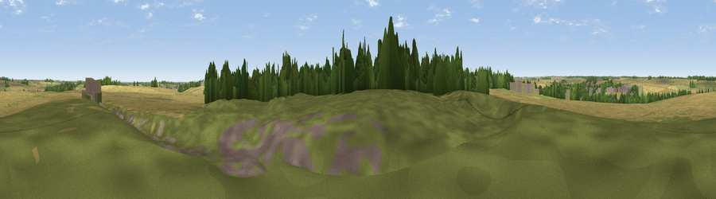

Viewpoint near Toll Bar
#42542 in England · top 79% of its area beats it · near Toll BarThe view, rendered

A 360° render of this exact spot computed from the terrain model, tree cover and land cover — summer colours, afternoon light, calibrated against photographs of famous viewpoints. Real trees, hedges and buildings will differ in detail.
The panorama
Grey silhouette: terrain skyline in each direction (720 bearings, Earth curvature and refraction included). Dashed green: skyline with trees (+15 m) and buildings (+8 m) as obstacles. Blue strip: how far the ground is visible on each bearing.
Where the view opens
Wedge length = distance to the farthest visible ground on that bearing (vegetation-aware). Rings at 10, 25 and 50 km.
What fills the view
54% cropland · 32% grassland · 11% woodland · 3% built-up
Angular shares of the visible panorama (visual magnitude), not map area. Landscape diversity 0.46 (0–1 Shannon).
Key numbers
More beautiful places nearby
The staircase of upgrades: each row has a higher view potential than everything closer. Driving times are estimates from straight-line distance, calibrated against real road routing — check an actual route before setting out.
| Place | Direction | Drive | Score |
|---|---|---|---|
| Viewpoint near Stamford | ESE · 1 km | ~4 min | 30.4 |
| Viewpoint near Little Casterton | N · 3 km | ~7 min | 36.0 |
| Viewpoint near Duddington | S · 9 km | ~17 min | 43.8 |
| Viewpoint near Toft | NE · 11 km | ~21 min | 49.0 |
| Viewpoint near Owston | W · 24 km | ~39 min | 49.9 |
| Robin-a-Tiptoe Hill | W · 24 km | ~39 min | 54.6 |
| Viewpoint near Pickwell | W · 24 km | ~40 min | 57.3 |
| Viewpoint near Burrough on the Hill | W · 25 km | ~41 min | 63.4 |
52.66559, -0.50540 · source: osm peak · position refined by local search. Computed location — check access rights before visiting.